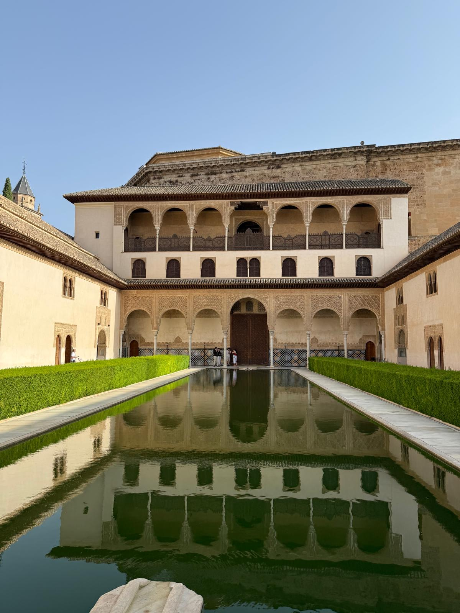
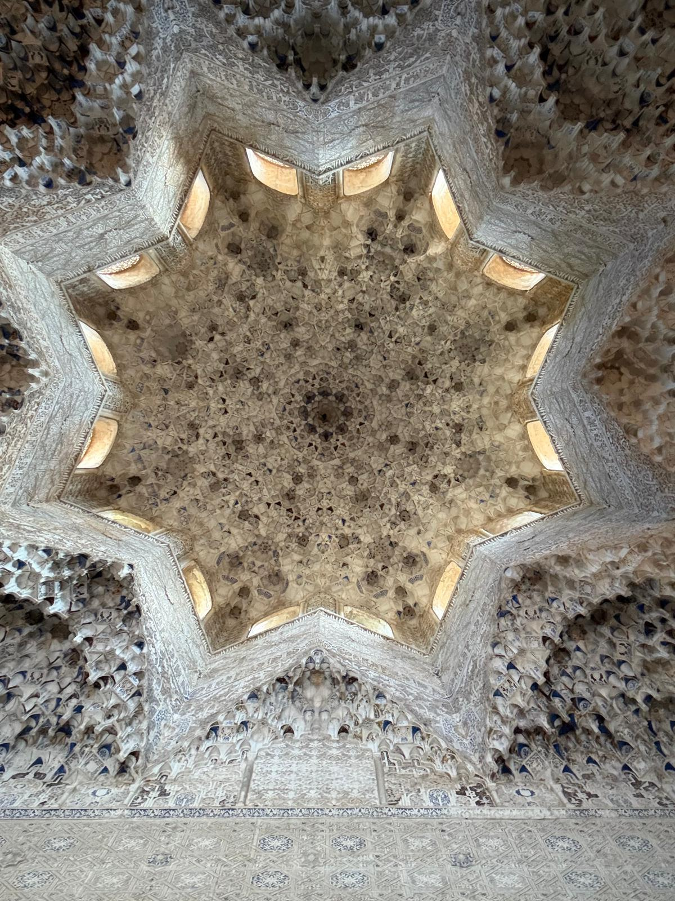
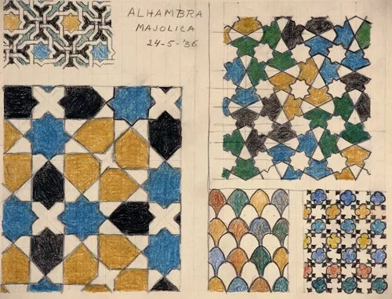
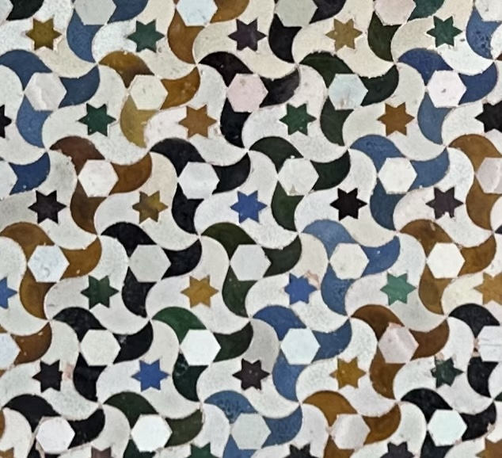
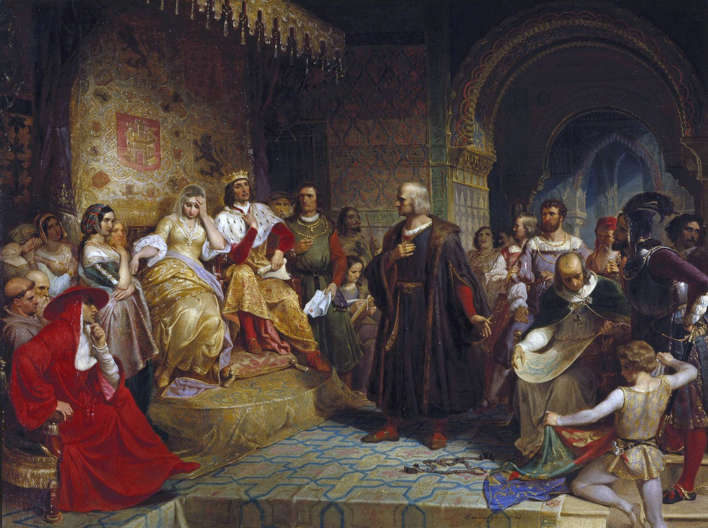

On a hilltop, against the backdrop of the Sierra Nevada
mountains in Granada, Spain, lies the Alhambra fortress.
This palace is a relic of Islamic rule in Iberia, which
lasted nearly eight centuries. It stands as the crowning
achievement of the Nasrid dynasty, and a witness to its fall.
As imposing as the Alhambra is from the outside, as soon as you
step in, in the words of American writer Washington Irving, you find
"poetry breathing throughout the fairy architecture of its halls."
Within, finely carved arabesques, calligraphic verses, and
wonderfully symmetric patterns adorn the walls. The palace's
artwork has awed its travelers and captivated the minds of many,
including one obsessive Dutch printmaker.



Escher visited the Alhambra in 1922 and again in 1936, and sketched some of its patterns.
...And mathematicians are no exception...
The Alhambra is a treasure trove of what mathematicians call
wallpaper patterns. These are designs that, in principle, continue forever, and are built from a motif repeated
along two independent directions.
What makes them interesting and beautiful are their symmetries!
If a group theorist walked into the Alhambra, she might
be compelled to start sorting its patterns, placing
two patterns in the same category when they have the same underlying symmetries.
After sorting for a while, though, a question would naturally arise: just how many categories are there?

Pajarita's tiling in the Alhambra.
On first considering this question, one might intuitively answer:
"Surely a huge number of categories exist. Perhaps even infinitely many.
After all, artists can get as creative as they like cooking up
these patterns." But the answer is... 17: every wallpaper pattern
falls into one of just 17 categories, known formally as the 17 wallpaper groups.
And here is what's special about the
Alhambra: it is claimed to be the only
place in the world to exhibit examples of all 17 groups.
On this page, we discuss whether the Alhambra really has all 17 groups, and
we explain why it is that
only 17 exist, and not 16 or infinitely many. To do so, we do
not take the traditional algebraic
route (which is how a group theorist might solve
this). Instead, we present the ideas from the
book “The Symmetries of Things” by mathematicians
John Conway, Heidi Burgiel, and Chaim Goodman-Strauss,
treating these patterns not as flat walls, but as
folded-up topological shapes called orbifolds.

Columbus Before the Queen, 19th-century painting by Emanuel Leutze.
After the surrender of Granada in 1492 to the catholic Kings
Ferdinand and Isabella of Spain, the Alhambra became the royal
quarters and property of the Spanish crown. That same year, the
monarchs signed the contract for Christopher Columbus' expedition
across the Atlantic in the Hall of Ambassadors in the Alhambra.
The content is divided into sections. We start by discussing
the symmetries of the Euclidean plane. We follow up by learning about a notation
used to describe the symmetries of wallpaper patterns.
After, we learn about how this notation really describes
topological orbifolds. We take a detour to learn about surfaces
and Euler's Characteristic, and connect it all together when we
discuss the Magic Theorem which proves the 17 wallpaper groups.
We present examples from the Alhambra of the 17 group types.
We wrap it all up in the conclusion and discuss other curiosities
of the Alhambra.